地政学
ンゲルルムッドは小さな首都ですが、自由連合、台湾外交、海洋保全、観光立国を扱います。議事堂の静けさの背後で、広い海域と大国関係が島の暮らしを左右します。ラジオやSNSで外交の話題が家庭にも届く要衝です。
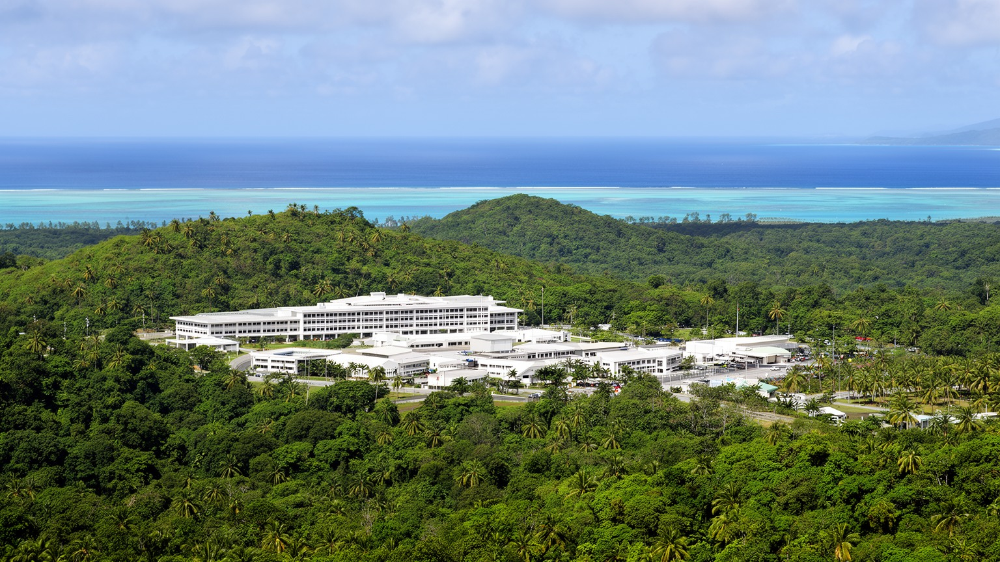
🇵🇼 パラオ / マルキョク州 / World City Atlas
バベルダオブ島の緑の中に置かれたパラオの政府中枢。人口の大きな都市ではなく、国会議事堂、伝統首長制、観光立国、海洋保全、自由連合、コロール圏の暮らしが近い距離で結びつきます。
都市の骨格
ンゲルルムッドは住宅都市ではなく、国会議事堂と政府機能が置かれた行政の座です。コロールに日常の商業と人口が残り、バベルダオブ島の首都地区は、国家の象徴、道路、海洋保全、観光政策を静かに引き受けます。
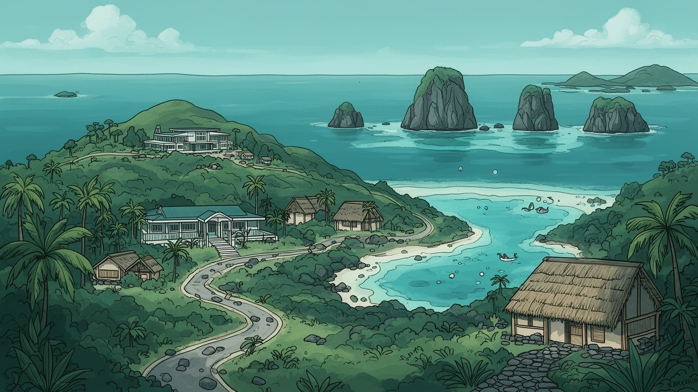
ンゲルルムッドは小さな首都ですが、自由連合、台湾外交、海洋保全、観光立国を扱います。議事堂の静けさの背後で、広い海域と大国関係が島の暮らしを左右します。ラジオやSNSで外交の話題が家庭にも届く要衝です。
雇用は行政、観光、建設、漁業、小売、公共事業に支えられます。首都だけで市場は完結せず、コロールのホテル、空港、港、学校、商店と一体で働き方が作られ、買い物と通勤の移動も小さな島の日常の一部になります。
パラオ語と英語、教会、氏族、伝統首長制、村の儀礼が生きています。近代的な議会制度は、土地、親族、年長者への敬意と重なり、子どもや高齢者を含む合意形成を首都にも持ち込みます。祈りと歌声も日々支えになります。
旅行者は国会議事堂、ガラスマオの滝、ガルドック湖、石の道、ロックアイランドへ向かいます。住民の日常はコロールとの移動、輸入物価、医療、学校、強い日差しと雨、海の保全と観光収入の均衡に支えられます。
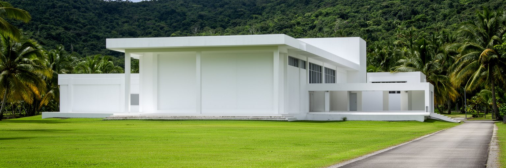
ンゲルルムッドは、人口の集積から生まれた都市ではありません。パラオの首都として知られますが、実態はマルキョク州の丘陵に置かれた政府中枢であり、国会議事堂と関連施設が広い緑の中に立っています。商業、港、ホテル、学校、病院の多くは旧首都コロール側に集中し、首都地区は日常の市場より国家の象徴と制度を担う場所として機能します。だからここを読む時は、人口規模の小ささだけを珍しがるより、なぜ政府機能がバベルダオブ島へ移されたのかを見る必要があります。首都移転は、コロールへの一極集中を和らげ、最大の島の開発を促し、国家の中心を地理的に広げる意図を持っていました。ですが道路、職員の通勤、維持費、周辺サービスの不足は、小国の行政能力を試す課題にもなりました。ンゲルルムッドの静かな景観には、主権国家としての自立を形にしたい願いと、限られた人口で施設を支え続ける現実が同時に見えます。首都らしさは雑踏ではなく、議会が開かれ、予算が決まり、外交文書が処理される機能の集中にあります。緑の丘の議事堂は、都市の大きさではなく制度の置き場所が首都を作ることを示しています。訪問者が感じる空白は失敗ではなく、人口の少ない国が国家の形式を広い土地に置いた結果でもあります。式典の日だけ人が集まり、普段は森と芝生が目立つ景観は、首都と集落の距離を考えさせます。静けさは制度の弱さではなく、小国の尺度そのものでもあります。
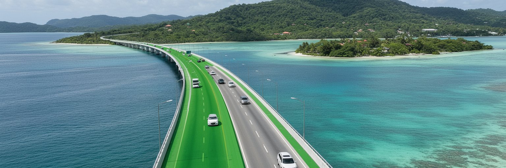
ンゲルルムッドを単独の都市として見ると、パラオの実際の都市構造はつかみにくいです。人口、ホテル、商店、港湾、学校、医療、飲食、観光事業の中心は今もコロールにあり、首都地区の職員や来訪者の多くはコロール圏との往復を前提に動きます。バベルダオブ島とコロールを結ぶ道路と橋は、行政と生活をつなぐ背骨です。首都が移っても、日常の都市機能は一晩では移りません。国会の会議、政府機関の業務、式典、訪問団の受け入れはンゲルルムッドで行われても、宿泊、買い物、港からの物資、空港へのアクセスは周辺の広いネットワークに依存します。この二重構造は非効率にも見えますが、小さな国が土地利用を分散し、バベルダオブ島の道路整備や地域開発を進める意味も持ちます。課題は、首都地区を孤立した記念建築にせず、コロール、空港、村落、観光地、自然保護区と結ぶ実用的な回路を強くすることです。通勤時間、燃料費、公共交通の乏しさ、車への依存は、職員の生活と行政コストに影響します。ンゲルルムッドの首都性は、コロールの都市性と対立するのではなく、互いに補完する形で成り立っています。観光客もまた、首都を見た後にコロールへ戻り、港や店で島の生活に触れます。二つの中心を往復することで、政治の場所と暮らしの場所が分かれていても同じ国家空間を作ることが分かります。首都を読むには、その往復の時間も含めて見る必要があります。
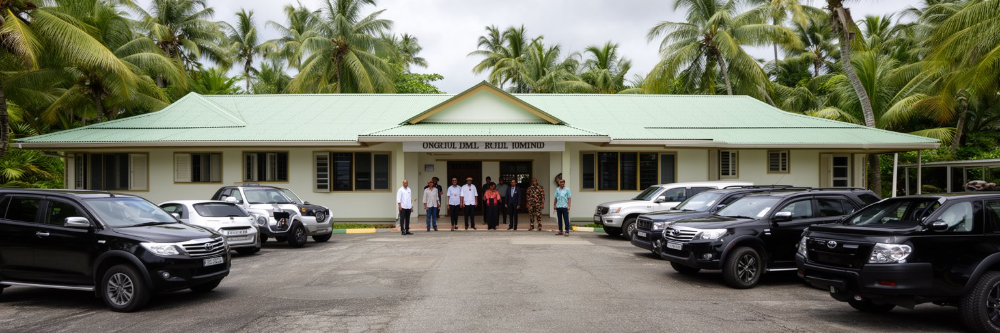
パラオの政治を理解するには、米国との自由連合を避けて通れません。パラオは独立した主権国家でありながら、安全保障、財政支援、インフラ、教育、移住、医療、災害対応で米国との関係に深く結びついています。ンゲルルムッドの政府は、この関係を更新し、資金を公共サービスへ配分し、島の将来に合う条件を交渉する役割を担います。同時にパラオは台湾との外交関係を維持し、日本、オーストラリア、太平洋諸国、国際機関とも密接に関わります。大国間競争が太平洋で強まるほど、小さな首都の会議室が持つ意味は大きくなります。外交は抽象的な安全保障だけではなく、道路、港、通信、奨学金、観光市場、医療紹介、海上監視へ直結します。外部支援は機会を生みますが、依存や政策選択の幅を狭める危険もあります。ンゲルルムッドの課題は、援助を受けるだけでなく、パラオ自身の優先順位として海、土地、文化、若者の未来を守ることです。小国外交の成果は共同声明より、学校が動くか、診療が続くか、港と道路が維持されるかで測られます。静かな首都の実務は、太平洋の地政学と家庭の生活費を同じ机で扱っています。来訪する代表団や援助案件は、住民にとって遠いニュースではありません。奨学金、病院紹介、通信費、公共施設の維持として生活に戻るため、外交交渉は家庭の将来設計とも重なります。小さな庁舎の決定が、若者の進学先や医療搬送の可否にも届きます。
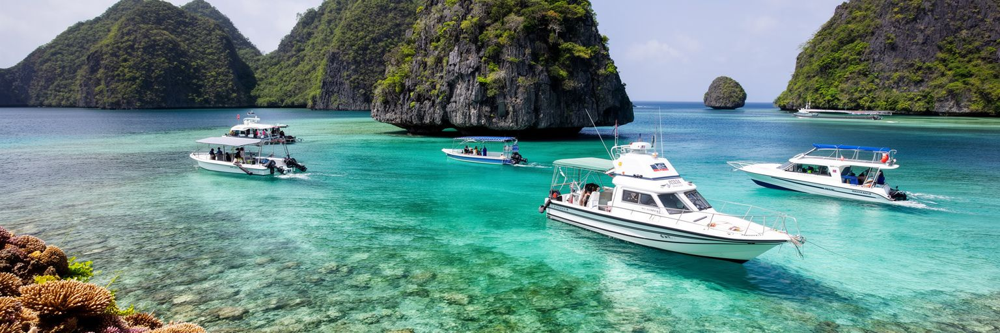
パラオは、海洋保全を国家の中心的な物語として世界へ示してきた国です。ロックアイランド、透明な礁湖、サンゴ礁、マンタやサメ、ダイビング観光は経済の重要な資産であり、同時に文化と食の基盤でもあります。ンゲルルムッドの政府は、保護区、漁業規制、観光入域料、環境教育、海上監視、国際会議での発信を通じて、海を消費するだけでなく守る制度を作ろうとしています。小さな国にとって、広い海域を監視し、違法漁業を防ぎ、観光客の行動を管理し、サンゴ礁の回復力を保つことは容易ではありません。ですが海が壊れれば、観光収入、食料、文化的誇り、国際的な存在感が同時に傷つきます。パラオの海洋政策は、環境保護と経済開発を対立させるのではなく、長く稼げる自然を残すための産業政策でもあります。観光客が支払う料金、ガイドの説明、港のルール、学校での環境教育は、首都で決まる制度を現場へ運ぶ手段になります。ンゲルルムッドは海辺の大港ではありませんが、海をどう管理するかを決める政治の場所です。緑の丘の議事堂から、礁湖の水質、外洋の漁船、島民の食卓までが一本の政策線でつながっています。漁業者、観光業者、保護官、研究者、村の長老が同じ海を異なる目的で使うからこそ、ルールには説明と納得が必要になります。保全は標語ではなく、毎日の利用を調整する技術です。海を守る政策が信頼されるには、制限の理由と利益の戻り先が見えることも欠かせません。
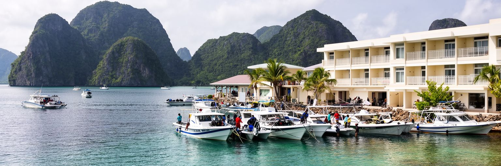
パラオ経済の大きな柱は観光です。ダイビング、シュノーケリング、ロックアイランド、歴史遺産、自然体験は世界から旅行者を引き寄せ、ホテル、レストラン、ガイド、船、タクシー、小売、農漁業、建設に雇用を作ります。ンゲルルムッドの政府にとって、観光は税収と外貨を得る手段であり、同時に環境容量を超えないよう管理すべき繊細な産業です。観光客が急増すれば収入は増えますが、サンゴ礁への負荷、廃棄物、水資源、文化的な摩擦、輸入食品と燃料への依存も強まります。感染症や航空便の減少、地域情勢、為替の変化が起これば、観光収入は急に落ち込みます。小さな国では、一つの外部ショックが家計と財政に直接響きます。だからパラオの観光政策は、数を追うだけでなく、滞在の質、環境負荷、地元事業者への利益還元、人材育成を慎重に設計する必要があります。ンゲルルムッドの静かな議会で決まる料金や規制は、海上のボート、ホテルの雇用、若者の職業選択へ広がっていきます。観光は楽園のイメージを売る産業ではなく、自然資本を壊さず暮らしへ変える難しい制度です。首都は、その均衡を保つためのルール作りを引き受けています。地元の食材や工芸、文化解説に観光収入が回れば、海だけに頼らない価値も生まれます。来訪者を絞り、学びの深い旅に変える発想が、小国の観光を長持ちさせます。短い滞在でも、支払いが地域へ残る仕組みが重要になります。
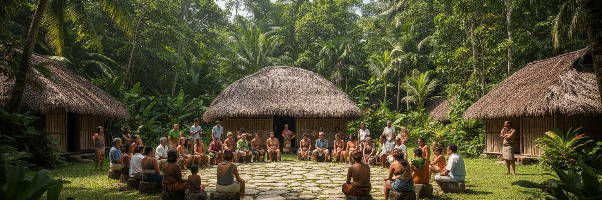
パラオ社会では、土地、氏族、伝統首長制、村の関係が大きな意味を持ちます。近代的な議会や省庁があっても、土地は単なる売買対象ではなく、家族の記憶、権利、義務、儀礼、社会的な地位と結びつきます。ンゲルルムッドが置かれたバベルダオブ島でも、道路や公共施設、観光開発、自然保護は、誰の土地で、誰が判断し、誰が利益と負担を受けるのかという問いを伴います。パラオには選挙で選ばれる政治制度と、伝統的な首長の権威が併存しており、国家の重要な判断にも文化的な手順と敬意が求められます。首都地区の低い建物を見ただけでは、この深い社会構造は見えにくいです。ですが公共事業の合意、環境保護、観光客の受け入れ、村の境界をめぐる判断では、伝統と近代行政が重なり合います。土地を尊重しない開発は摩擦を生み、伝統だけに閉じると若者の機会が限られます。ンゲルルムッドの役割は、二つの制度を対立させることではなく、住民が納得できる形で結び直すことにあります。首都の政治は議場の討論だけでなく、村の会合、親族の調整、首長への相談にも支えられています。そこにパラオらしい統治の厚みがあります。観光施設や道路が新しく作られる時も、地図上の空白地ではなく誰かの記憶のある土地として扱われます。合意の手順を丁寧に守ることが、公共事業を長く使えるものにします。土地の物語を無視しないことが、首都と村の信頼を保ちます。
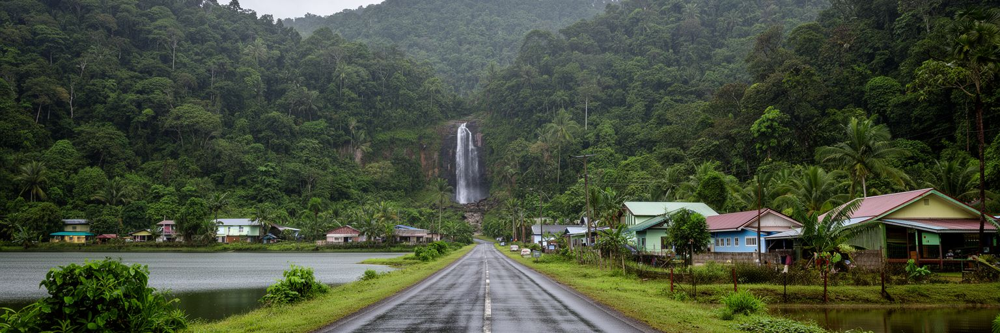
バベルダオブ島はパラオ最大の島でありながら、人口と商業の重心は長くコロール側に偏ってきました。ンゲルルムッドへの首都移転と道路整備は、この最大の島を国家の空間として使い直す試みでもあります。島を巡る道路は、政府職員の通勤だけでなく、村落、学校、農地、滝、湖、石の道、観光地、港や空港への移動をつなぎます。道路が良くなれば、観光ルートが広がり、公共サービスが届きやすくなり、土地利用の選択肢も増えます。一方で、車への依存、維持費、雨による劣化、斜面の排水、自然保護区への圧力も増します。道路は単なるインフラではなく、どの地域を国家の中心に近づけるかを決める政治的な線です。首都地区が緑の中に孤立せず、バベルダオブ島の村や自然と結びつくためには、移動の信頼性が欠かせません。ですが道路整備が観光開発だけに偏れば、住民の生活や環境を傷つける可能性もあります。ンゲルルムッドを読むことは、議事堂へ続く道の先に、島の地域格差、自然保護、公共サービス、土地の価値がどう変わるかを見ることでもあります。静かな舗装路は、首都移転が日常の移動へ落ちていく現場でもあります。雨の後に路面や排水がどう保たれるか、夜間に安全に走れるかは、行政の象徴よりも住民に近い論点です。道路の質は、島の統合を測る身近な指標になります。道沿いの小さな集落や学校が便利になれば、首都移転の意味は住民にも見えやすくなります。
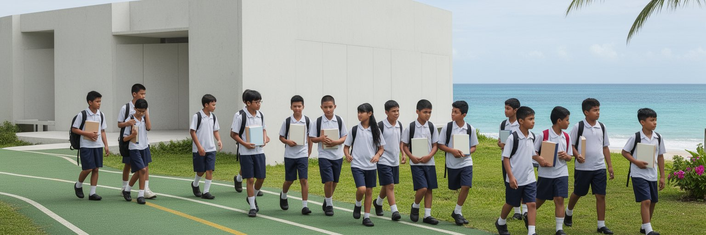
パラオのように人口の少ない国では、若者一人ひとりの進路が社会全体の能力に直結します。公務員、教師、看護師、観光ガイド、船長、環境監視員、会計、法務、情報通信の人材が不足すれば、国家の制度はすぐ弱くなります。ンゲルルムッドの政府機能は、コロール周辺の学校や大学、職業訓練、海外留学から育つ人材に支えられています。米国との自由連合により、進学や就労の選択肢は広がりますが、若者が島外へ出たまま戻らなければ、行政、医療、教育、観光の担い手が薄くなります。家族は英語教育、パラオ語、文化的な礼節、海外での経験、島へ戻る責任の間で子どもの将来を考えます。小国にとって教育は個人の成功だけでなく、主権を維持するための基盤です。ンゲルルムッドの議事堂で議論される奨学金、公共雇用、環境教育、観光人材育成は、若者が島で暮らす理由を作れるかに関わります。海を守る専門家、観光の質を高める事業者、伝統を理解する行政職員が育てば、人口の少なさは必ずしも弱さだけではありません。課題は、外へ学びに行く力と、戻って働ける場を両立させることです。政府機関での研修や地域の環境調査、観光事業の実習が増えれば、若者は島の仕事を具体的に想像できます。教育は国外への出口であり、同時に首都を支える入口でもあります。家族や村が帰国を歓迎し、専門性を生かせる職場を用意できるかが鍵になります。
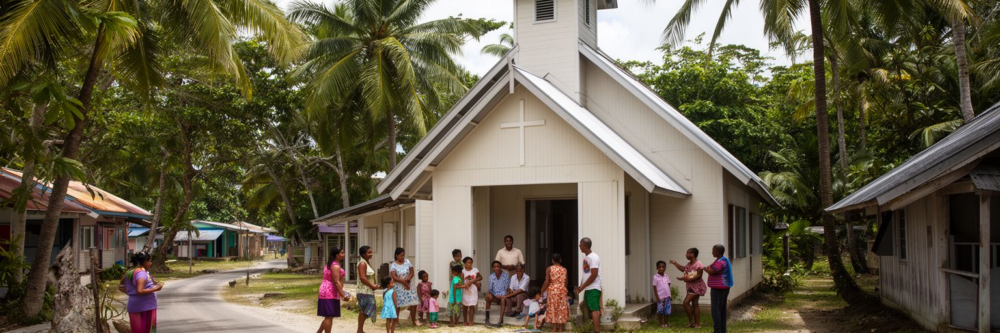
ンゲルルムッド周辺の社会を理解するには、教会、親族、村の共同体を見なければなりません。パラオではキリスト教が生活暦に深く入り、日曜礼拝、葬儀、結婚、合唱、学校行事、地域の支援が人々の関係を保ちます。そこに氏族や伝統首長制、年長者への敬意、土地に結びつく義務が重なり、近代行政だけでは説明できない公共性が生まれます。小さな社会では、仕事、政治、教育、土地、移住の話題が親族関係と近く、支え合いは安心であると同時に負担にもなります。首都地区に国会議事堂があっても、住民の信頼は書類だけでは成り立ちません。挨拶、参列、寄付、共同作業、教会でのつながりが、制度を日常へ接続します。台風や病気、葬儀、学費、海外へ出る若者を支えるのも、公的制度と共同体の組み合わせです。パラオの都市性は、匿名の大都市よりも顔の見える関係に近いです。だからンゲルルムッドの政治は、国会の形式と村の礼節を同時に理解する必要があります。共同体の強さは暮らしの安全網ですが、若者や女性が新しい意見を言える余地も重要になります。信仰と親族は、変化を拒む壁ではなく、変化を話し合う場にもなりえます。海外に住む家族からの連絡や送金も共同体を広げ、島外にいても葬儀や学費、教会行事を支える関係が保たれます。首都の制度は、この広がった家族網の上で動いています。共同体の声が届くからこそ、政策は数字だけでなく礼節を伴う必要があります。
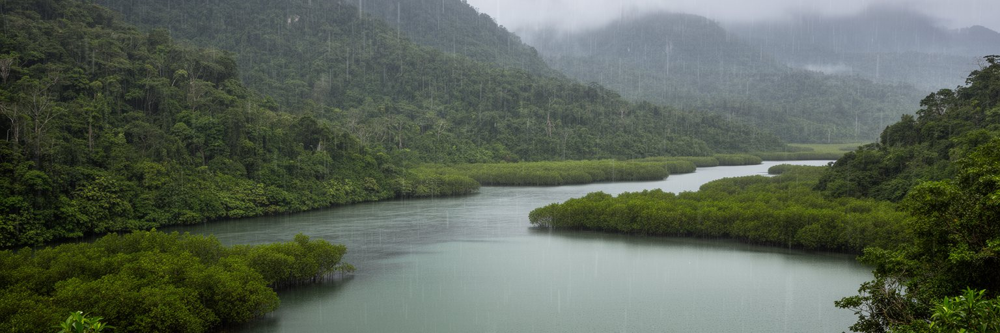
パラオは熱帯海洋性の気候にあり、雨、湿度、貿易風、サンゴ礁、森が生活環境を形作ります。バベルダオブ島には川や湖があり、マルキョク州にはミクロネシア最大級の自然淡水湖として知られるガルドック湖もあります。水は豊かな資源に見えますが、豪雨、土砂流出、道路の劣化、排水、飲料水管理、サンゴ礁への濁りは行政上の大きな課題になっています。さらに沿岸部や低い島々は、海面上昇、高潮、海岸侵食、サンゴ白化、漁場の変化にさらされます。ンゲルルムッドの首都地区は内陸寄りの丘にありますが、政府が扱う気候リスクは国全体に広がります。観光にとって海の透明度は価値であり、住民にとって海岸と水は生活の基盤です。気候政策は国際会議での発言だけでは足りず、道路排水、森林保全、流域管理、港湾、避難、再生可能エネルギー、学校教育まで含む日常の実務になります。パラオが海洋保全を掲げるなら、陸から海へ流れる水も丁寧に管理しなければなりません。ンゲルルムッドの緑の景観は、自然の美しさとインフラ維持の難しさを同時に映します。雨の多い島で水を守ることは、観光、健康、文化、国家財政を守ることでもあります。流域の森が失われれば赤土が海へ流れ、ダイビングの魅力も魚の産卵場も傷みます。気候適応は堤防だけでなく、丘の土地利用と海の透明度をつなぐ管理でもあります。首都の排水や植生保全は、遠い礁湖の健康にも影響する日常的な政策です。
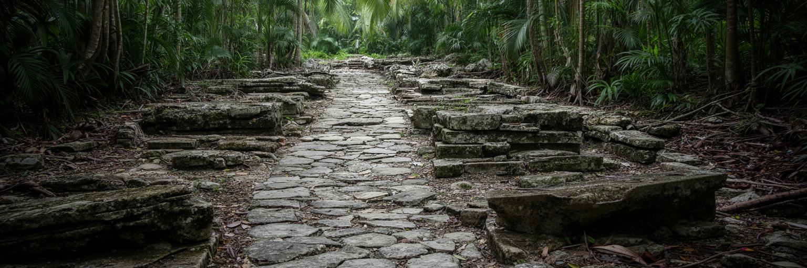
ンゲルルムッドの周辺を歩く旅は、国会議事堂だけで終わりません。バベルダオブ島には古い石の道、村落の痕跡、棚田状の地形、神話や首長制に関わる場所があり、パラオの歴史が現代国家よりはるかに長い時間を持つことを示しています。さらにパラオは第二次世界大戦の激戦地を抱え、ペリリューをはじめとする戦争記憶は、観光と追悼の間で慎重に扱われるべき遺産です。首都の近代的な議事堂は、こうした古い記憶や痛みの上に立つ国家の現在を象徴しています。遺産を観光資源として紹介する時には、写真を撮る対象として消費するだけでなく、土地の所有、村の物語、戦没者への敬意、自然保護との関係を理解する必要があります。パラオの文化は、石や戦跡に閉じ込められた過去ではなく、言語、儀礼、土地、家族、教会、学校で続く現在の実践でもあります。ンゲルルムッドの政府が文化を守るとは、博物館や案内板を整えるだけではありません。地域の語り手、ガイド、教育、土地の合意、訪問者のマナーを支えることでもあります。小さな首都から周辺の遺産を見ると、パラオが海の美しさだけでなく、厚い歴史と記憶を持つ国であることが分かります。戦跡や石道を巡る旅では、静かな場所ほど声の大きさや立ち入り方が問われます。敬意ある観光は、地域の記憶を守りながら収入を生むための基本条件になります。学校教育とガイドの語りがつながれば、遺産は外向けの商品ではなく共有財産として残ります。
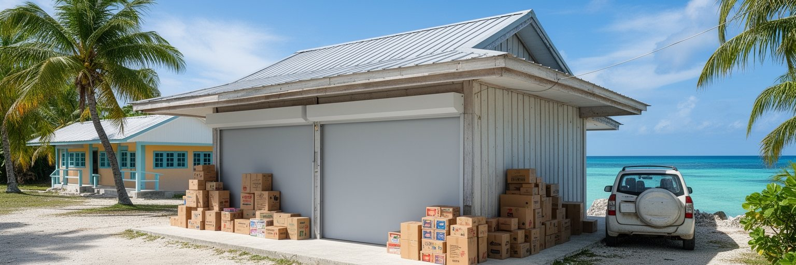
ンゲルルムッドの首都地区そのものには、日常の商店街や大きな住宅地が広がっているわけではありません。住民の暮らしはマルキョク州の集落、コロール圏、空港や港へ続く道路、学校、教会、家族の土地と結びついています。食料、燃料、建材、医薬品、車の部品、通信機器の多くは輸入に頼り、船便、航空便、為替、燃料価格が生活費へ反映されます。地元の魚、タロイモ、果物、家庭菜園、親族の分け合いは食と関係を支えますが、現金で買うものも多いです。車は通勤、通学、買い物、礼拝、病院への移動に欠かせず、燃料費や修理費が家計に重くのしかかります。小さな国では、物価上昇や物流の遅れがすぐ家庭の選択を狭めます。観光収入や公務員給与が一定の支えになる一方、若者の仕事、住宅、医療、教育費は継続的な負担になっています。ンゲルルムッドを首都の記念建築としてだけ見ると、こうした生活の厚みを見落とします。行政地区の静けさの背後には、輸入経済、親族の助け合い、コロールとの往復、海から得る食料が重なっています。首都は人が住まない場所に見えても、そこで決まる政策は毎日の買い物と移動へ戻ってきます。港に荷物が遅れれば店の棚が変わり、燃料が上がれば通勤や船の費用も上がります。ラジオの天気、SNSの店情報、雨上がりの湿った道、日差しの強い駐車場も、暮らしの判断材料です。だから物価対策や物流の安定は、首都で議論される最も身近な政策でもあります。
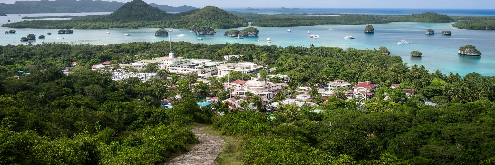
ンゲルルムッドは、都市を人口や商業規模で測る見方を揺さぶる首都です。居住者の少ない政府地区でありながら、ここにはパラオの主権、国会、自由連合、海洋保全、観光政策、伝統首長制、土地、気候リスクが集中します。旧首都コロールが日常の都市機能を担い、バベルダオブ島の首都地区が国家の象徴と行政を担うため、パラオの中心は一つの点ではなく、道路、橋、港、空港、村落、礁湖を結ぶ広い回路として存在します。ンゲルルムッドを珍しい無人口首都として消費するだけでは、この回路は見えません。大切なのは、静かな議事堂から、ロックアイランドの観光、海洋保護区、輸入品の価格、若者の進学、伝統的な土地の合意までを同じ地図で読むことです。パラオの強さは、美しい海を世界に示す力だけでなく、その海を守る制度を作り、外部支援を自国の優先順位へ変え、少ない人口で公共サービスを保つ努力にあります。ンゲルルムッドは大都市ではありませんが、小さな島国が二十一世紀に直面する問いを濃く映します。都市の価値は混雑や高さではなく、国家の責任がどれだけ明確に置かれているかにも宿ります。緑の丘の首都は、そのことを静かに教えています。ここでは空白も情報です。人の少ない議事堂、長い道路、森と海の近さが、パラオの統治が広い自然と限られた人口の間で続いていることを示しています。